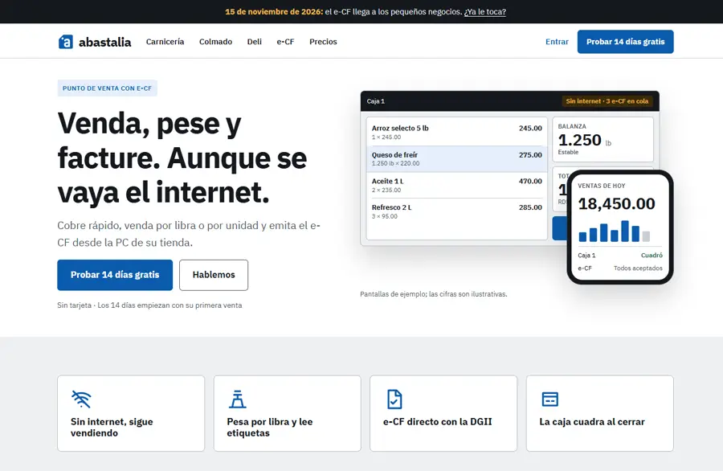
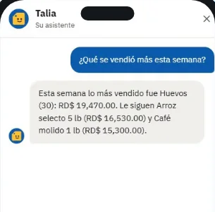

<title>Inicio Abastalia TK-312</title>
<meta name="claude:viewport-fit-sides" content="cover">
<link rel="preconnect" href="https://fonts.googleapis.com">
<link rel="stylesheet" href="https://fonts.googleapis.com/css2?family=IBM+Plex+Sans:wght@400;600;700&family=IBM+Plex+Mono:wght@500&display=swap">
<style>
/* Layout: one reading column (decision sheet), the three directions side by side as columns that stack on a phone. Brand tokens of abastalia.com. */
:root {
  --brand: #0B5CAD; --brand-soft: #E4EFFA; --ink: #14181D; --muted: #4A525B; --bg: #FFFFFF; --counter: #EEF0F2; --line: #C9CED4;
  --amber: #FFC233; --amber-soft: #FFF1D6; --amber-ink: #8A4B00; --ok: #16663A; --ok-soft: #E3F4E8; --bad: #A4262C; --bad-soft: #FBE7E8;
  --night: #14181D; --night-ink: #F1F3F5; --on-brand: #FFFFFF;
  --sans: "IBM Plex Sans", system-ui, "Segoe UI", sans-serif; --mono: "IBM Plex Mono", ui-monospace, Consolas, monospace;
}
@media (prefers-color-scheme: dark) { :root:not([data-theme="light"]) { --brand: #6DB3F5; --brand-soft: #16263A; --ink: #F1F3F5; --muted: #B4BCC4; --bg: #14181D; --counter: #1C2128; --line: #3A424B;
  --amber-soft: #33270F; --amber-ink: #F5C98A; --ok: #8FD8AB; --ok-soft: #14301E; --bad: #F2A7AB; --bad-soft: #3A1A1C; --night: #0B0E12; --on-brand: #14181D; color-scheme: dark; } }
:root[data-theme="dark"] { --brand: #6DB3F5; --brand-soft: #16263A; --ink: #F1F3F5; --muted: #B4BCC4; --bg: #14181D; --counter: #1C2128; --line: #3A424B;
  --amber-soft: #33270F; --amber-ink: #F5C98A; --ok: #8FD8AB; --ok-soft: #14301E; --bad: #F2A7AB; --bad-soft: #3A1A1C; --night: #0B0E12; --on-brand: #14181D; color-scheme: dark; }
body { background: var(--bg); color: var(--ink); font: 400 16px/1.6 var(--sans); }
.wrap { max-width: 1080px; margin: 0 auto; padding-left: max(16px, env(safe-area-inset-left, 0px)); padding-right: max(16px, env(safe-area-inset-right, 0px)); }
section { padding-block: 40px; border-top: 1px solid var(--line); }
header { padding-block: 40px 24px; }
h1 { font-size: clamp(30px, 5vw, 44px); line-height: 1.1; letter-spacing: -0.02em; margin: 8px 0 12px; text-wrap: balance; }
h2 { font-size: clamp(22px, 3.4vw, 30px); line-height: 1.15; letter-spacing: -0.01em; margin: 0 0 16px; text-wrap: balance; }
h3 { font-size: 18px; margin: 0 0 6px; }
p { margin: 0 0 12px; max-width: 68ch; }
.muted { color: var(--muted); }
.eyebrow { font: 500 12px/1 var(--mono); letter-spacing: 0.06em; text-transform: uppercase; color: var(--brand); }
.lead { font-size: 19px; color: var(--muted); }
.grid2 { display: grid; gap: 24px; grid-template-columns: minmax(0, 1fr); }
@media (min-width: 820px) { .grid2 { grid-template-columns: minmax(0, 1.2fr) minmax(0, 1fr); align-items: start; } }
figure { margin: 0; }
figcaption { font-size: 13px; color: var(--muted); margin-top: 6px; }
.shot { display: block; width: 100%; height: auto; border: 1px solid var(--line); border-radius: 8px; }
/* Critique list: severity in form (chip) as well as in words. */
.crit { list-style: none; padding: 0; margin: 0; display: grid; gap: 10px; }
.crit li { display: grid; grid-template-columns: 76px minmax(0, 1fr); gap: 12px; align-items: start; }
.sev { font: 600 12px/1 var(--sans); padding: 6px 8px; border-radius: 4px; text-align: center; }
.sev--hi { background: var(--bad-soft); color: var(--bad); }
.sev--mid { background: var(--amber-soft); color: var(--amber-ink); }
.sev--ok { background: var(--ok-soft); color: var(--ok); }
.decision { background: var(--brand-soft); border-radius: 12px; padding: 20px; }
.decision strong { color: var(--brand); }
/* Directions. */
.dirs { display: grid; gap: 20px; grid-template-columns: minmax(0, 1fr); }
@media (min-width: 900px) { .dirs { grid-template-columns: repeat(3, minmax(0, 1fr)); } }
.dir { border: 1px solid var(--line); border-radius: 12px; padding: 18px; display: flex; flex-direction: column; gap: 12px; min-width: 0; }
.dir--pick { border: 2px solid var(--brand); }
.dir__tag { align-self: flex-start; font: 600 12px/1 var(--sans); background: var(--brand); color: var(--on-brand); padding: 6px 10px; border-radius: 999px; }
.dir h3 { font-size: 20px; }
.dir ul { margin: 0; padding-left: 18px; display: grid; gap: 4px; font-size: 15px; }
.dir dl { margin: 0; display: grid; grid-template-columns: auto minmax(0, 1fr); gap: 4px 12px; font-size: 14px; }
.dir dt { color: var(--muted); }
.dir dd { margin: 0; }
/* Mini page mockups (to scale: 1 band = one section of the home). */
.mini { border: 1px solid var(--line); border-radius: 8px; overflow: hidden; background: var(--bg); font-size: 10px; line-height: 1.3; }
.mini > div { padding: 8px 10px; border-top: 1px solid var(--line); }
.mini > div:first-child { border-top: 0; }
.m-dark { background: var(--night); color: var(--night-ink); }
.m-blue { background: #0B5CAD; color: #fff; }
.m-gray { background: var(--counter); }
.m-row { display: flex; gap: 6px; align-items: center; }
.m-h { font-weight: 700; font-size: 12px; }
.m-chip { display: inline-block; border: 1px solid currentColor; border-radius: 999px; padding: 1px 6px; margin: 2px 2px 0 0; opacity: 0.85; }
.m-tiles { display: grid; grid-template-columns: repeat(3, 1fr); gap: 4px; }
.m-tiles span { background: var(--bg); border: 1px solid var(--line); border-radius: 4px; padding: 4px; }
.m-phone { width: 46px; height: 70px; border-radius: 8px; border: 3px solid var(--night); background: #fff; flex: none; }
.m-scr { flex: 1; height: 54px; border-radius: 4px; background: var(--counter); border: 1px solid var(--line); }
.m-hour { font: 500 10px var(--mono); color: var(--brand); width: 34px; flex: none; }
/* Talia. */
.talia { display: grid; gap: 24px; grid-template-columns: minmax(0, 1fr); }
@media (min-width: 820px) { .talia { grid-template-columns: 300px minmax(0, 1fr); } }
.phone { border: 8px solid var(--night); border-radius: 28px; overflow: hidden; max-width: 300px; background: #fff; }
.phone img { display: block; width: 100%; height: auto; }
table { border-collapse: collapse; width: 100%; font-size: 15px; }
th, td { text-align: left; vertical-align: top; padding: 8px 10px; border-bottom: 1px solid var(--line); }
th { background: var(--counter); font-weight: 600; }
.tw { overflow-x: auto; }
.tw table { min-width: 560px; }
code { font: 500 13px var(--mono); background: var(--counter); padding: 1px 5px; border-radius: 4px; }
.ask { list-style: none; padding: 0; margin: 0; display: grid; gap: 12px; counter-reset: q; }
.ask li { counter-increment: q; display: grid; grid-template-columns: 32px minmax(0, 1fr); gap: 12px; }
.ask li::before { content: counter(q); display: grid; place-items: center; width: 32px; height: 32px; border-radius: 50%; background: var(--brand); color: var(--on-brand); font-weight: 700; }
/* e-CF flow mockup: always on the dark band, like the site. */
.ecf { background: #14181D; color: #F1F3F5; border-radius: 12px; padding: 20px; display: grid; gap: 16px; margin: 12px 0; }
.ecf__path { display: grid; gap: 8px; grid-template-columns: minmax(0, 1fr); }
@media (min-width: 820px) { .ecf__path { grid-template-columns: minmax(0, 1fr) auto minmax(0, 1fr) auto minmax(0, 1fr) auto minmax(0, 1fr); align-items: stretch; } }
.ecf__node { border: 1px solid #343B44; border-radius: 10px; padding: 12px; display: flex; flex-direction: column; gap: 4px; min-width: 0; }
.ecf__node--ok { border-color: #5DD08A; }
.ecf__node--ok b { color: #5DD08A; }
.ecf__k { font: 500 11px/1 var(--mono); letter-spacing: 0.06em; text-transform: uppercase; color: #A9B2BC; }
.ecf__small { font-size: 13px; color: #A9B2BC; }
.ecf__mono { font: 500 14px var(--mono); }
.ecf__chip { align-self: flex-start; font-size: 12px; font-weight: 600; padding: 3px 8px; border-radius: 4px; background: #22303F; color: #CFE3F7; }
.ecf__chip--warn { background: #3A2A08; color: #F5B94A; flex: none; }
.ecf__arrow { display: grid; place-items: center; color: #6DB3F5; font-size: 20px; transform: rotate(90deg); }
@media (min-width: 820px) { .ecf__arrow { transform: none; } }
.ecf__offline { display: flex; gap: 12px; align-items: flex-start; flex-wrap: wrap; font-size: 14px; color: #D3D9DF; border-top: 1px dashed #343B44; padding-top: 12px; }
.ecf__offline span:last-child { flex: 1 1 260px; min-width: 0; }
.ecf__none { display: flex; flex-wrap: wrap; gap: 8px 16px; font-size: 14px; }
.ecf__none span::before { content: "✕ "; color: #F5B94A; }
.chips { display: flex; flex-wrap: wrap; gap: 8px; margin: 8px 0 12px; }
.chips span { border: 1px solid var(--line); border-radius: 999px; padding: 4px 12px; font-size: 14px; }
</style>

<header class="wrap">
  <span class="eyebrow">TK-312 · abastalia.com · 17/10/2026</span>
  <h1>Un inicio con más vida: qué cambiar y tres caminos</h1>
  <p class="lead">El dueño dijo: «el diseño actual no está mal pero le falta vida». Aquí van la crítica del inicio de hoy, la decisión del tema claro y tres direcciones para elegir antes de tocar el diseño.</p>
</header>

<section>
  <div class="wrap grid2">
    <div>
      <h2>El inicio de hoy</h2>
      <ul class="crit">
        <li><span class="sev sev--hi">Alta</span><span>El titular y la maqueta giran alrededor de <b>pesar</b> («Venda, pese y facture»; la balanza en el centro de la maqueta; el video del medio también pesa). Pesar es el dolor n.º 7 de 10 en <code>dolores-y-angulos-ads.md</code>; el e-CF y la caja son el n.º 1 y el n.º 2.</span></li>
        <li><span class="sev sev--hi">Alta</span><span><b>Talia no aparece en el inicio</b>, salvo 6 segundos dentro del video. Tampoco el panel en el celular ni los clientes y cuentas por cobrar.</span></li>
        <li><span class="sev sev--mid">Media</span><span>Poco movimiento y poco ritmo. La maqueta está quieta y casi todo son filas de cajas con borde de igual peso. Hay dos bloques seguidos en blanco con el mismo mensaje («Hecho para el mostrador» repite el hero).</span></li>
        <li><span class="sev sev--mid">Media</span><span>Los 4 beneficios son etiquetas sin explicación. En el teléfono son 4 tarjetas altas que empujan todo hacia abajo: 5,400 px de página a 375 px de ancho.</span></li>
        <li><span class="sev sev--mid">Media</span><span>En un teléfono con modo oscuro, el sitio abre oscuro y las fotos y capturas (claras) quedan como parches de luz.</span></li>
        <li><span class="sev sev--mid">Media</span><span>La palabra «fiado» en 11 lugares (inicio, colmado, precios, comparar, novedades, títulos y descripciones). <b>Ya cambiada</b> en la rama; faltan 2 en los borradores legales (otra sesión).</span></li>
        <li><span class="sev sev--ok">Bien</span><span>La franja oscura del e-CF, el precio de entrada, el video con transcripción, la línea de 3 pasos. LCP 2.45 s y CLS 0: no se puede empeorar.</span></li>
      </ul>
    </div>
    <figure>
      
      <figcaption>Hoy, 1366 px, tema claro.</figcaption>
    </figure>
  </div>
</section>

<section>
  <div class="wrap">
    <h2>Tema: claro por defecto, con opción de oscuro</h2>
    <div class="decision">
      <p><strong>Recomendación aplicada en la rama.</strong> El sitio abre en claro aunque el teléfono esté en oscuro. Quien quiera oscuro lo elige con el botón del pie, y la elección se recuerda en ese equipo. El panel del dueño sigue igual (automático).</p>
      <p class="muted">Por qué: es una página de venta y la marca es «Papel». Las fotos, las capturas de la caja y el video son claros. El dueño de colmado ve el sitio de día, en el mostrador. Con claro fijo, la primera impresión es la misma para todos. No hay razón fuerte en contra: el oscuro sigue a un toque y cumple el mismo contraste.</p>
    </div>
  </div>
</section>

<section>
  <div class="wrap">
    <h2>Tres direcciones</h2>
    <p class="muted">Las tres usan las mismas piezas reales: capturas de la caja y del panel, el video del producto y fotos de Pexels. No hay renders. El movimiento es solo CSS sobre transform y opacity, apagado con «reducir movimiento». El titular deja de nombrar la balanza.</p>
    <div class="dirs">
      <article class="dir dir--pick">
        <span class="dir__tag">Recomendada</span>
        <h3>A · Mostrador en marcha</h3>
        <div class="mini" aria-hidden="true">
          <div><div class="m-row"><div style="flex:1"><div class="m-h">Venda, facture y cuadre la caja. Aunque se vaya el internet.</div><span class="m-chip">Probar 14 días</span></div><div class="m-scr"></div><div class="m-phone"></div></div></div>
          <div class="m-gray"><div class="m-tiles"><span>Sin internet</span><span>e-CF sin cupo</span><span>Cuadre de caja</span><span>Talia</span><span>Desde el celular</span><span>Clientes y crédito</span></div></div>
          <div class="m-blue"><div class="m-row"><div style="flex:1"><div class="m-h">Pregúntele a Talia</div><span class="m-chip">¿Cuánto vendí ayer?</span><span class="m-chip">¿Quién tuvo faltante?</span></div><div class="m-phone"></div></div></div>
          <div><div class="m-h">Clientes y cuentas por cobrar</div>límite · abonos · estado de cuenta por WhatsApp</div>
          <div class="m-dark"><div class="m-h">e-CF sin intermediarios</div></div>
          <div><div class="m-h">Cómo funciona</div>video · 3 pasos</div>
        </div>
        <ul>
          <li>La maqueta del hero <b>se mueve</b> una vez: entran las líneas, la caja pasa de «Sin internet · 3 e-CF en cola» a «3 e-CF aceptados» y el total del celular sube.</li>
          <li>Seis beneficios arriba, cada uno con su línea.</li>
          <li>Franja azul de Talia con su captura real y las preguntas que sí contesta.</li>
          <li>Bloque nuevo de clientes y cuentas por cobrar con la captura del estado de cuenta.</li>
          <li>Las secciones aparecen suaves al bajar, siempre visibles sin JavaScript.</li>
        </ul>
        <dl><dt>Esfuerzo</dt><dd>1.5–2 días</dd><dt>LCP</dt><dd>Igual: el hero sigue siendo HTML, sin imagen nueva arriba</dd><dt>Riesgo</dt><dd>Bajo</dd></dl>
      </article>
      <article class="dir">
        <h3>B · Un día en la tienda</h3>
        <div class="mini" aria-hidden="true">
          <div><div class="m-h">Un día con Abastalia</div><span class="m-chip">Probar 14 días</span></div>
          <div class="m-row"><span class="m-hour">7:00</span><div class="m-scr"></div><span>Abre el turno</span></div>
          <div class="m-row"><span class="m-hour">10:30</span><div class="m-scr"></div><span>Se va el internet: sigue</span></div>
          <div class="m-row"><span class="m-hour">13:00</span><div class="m-scr"></div><span>Venta a crédito</span></div>
          <div class="m-row"><span class="m-hour">19:00</span><div class="m-scr"></div><span>Cuadre ciego</span></div>
          <div class="m-row m-blue"><span class="m-hour" style="color:#fff">21:00</span><div class="m-phone"></div><span>Desde la casa, a Talia</span></div>
        </div>
        <ul>
          <li>El inicio cuenta un día real por horas. Cada hora tiene su captura y queda fija mientras se baja.</li>
          <li>Es lo más inmersivo y lo que mejor explica «para qué me sirve».</li>
          <li>Necesita capturas nuevas en alta resolución: hay que volver a correr la captura del video, con 2× y estados nuevos (crédito, internet caído).</li>
        </ul>
        <dl><dt>Esfuerzo</dt><dd>3–4 días</dd><dt>LCP</dt><dd>Cuidado: más imágenes; ninguna arriba del pliegue</dd><dt>Riesgo</dt><dd>Medio: página más larga en el teléfono</dd></dl>
      </article>
      <article class="dir">
        <h3>C · Talia al frente</h3>
        <div class="mini" aria-hidden="true">
          <div class="m-blue"><div class="m-row"><div style="flex:1"><div class="m-h">Pregúntele a su negocio.</div>Ventas, cuadres y quién le debe, desde el celular.</div><div class="m-phone"></div></div></div>
          <div class="m-gray"><div class="m-tiles"><span>e-CF sin cupo</span><span>Sin internet</span><span>Cuadre</span></div></div>
          <div class="m-dark"><div class="m-h">e-CF sin intermediarios</div></div>
          <div><div class="m-h">Cómo funciona</div></div>
        </div>
        <ul>
          <li>El hero es la conversación con Talia en el teléfono.</li>
          <li>Diferencia fuerte frente a Alegra y Poszy, que no tienen asistente.</li>
          <li>Pero el dolor que trae clientes hoy es el e-CF del 15/11. Talia solo lee datos, así que el titular promete menos de lo que el producto hace.</li>
        </ul>
        <dl><dt>Esfuerzo</dt><dd>1.5 días</dd><dt>LCP</dt><dd>La captura del hero pasa a ser el LCP: pesa ~20 KB, cabe</dd><dt>Riesgo</dt><dd>Alto en mensaje; mejor para un anuncio o una página <code>/talia</code></dd></dl>
      </article>
    </div>
  </div>
</section>

<section>
  <div class="wrap">
    <h2>Tres pedidos del dueño (valen para A, B o C)</h2>

    <h3>1 · «Hecho para el mostrador»: fuera la pesa analógica</h3>
    <p>El video muestra una balanza colgante de aguja. Abastalia solo lee balanzas digitales por COM o USB (CAS, Mettler Toledo, A&amp;D) y etiquetas EAN-13 con peso, así que la escena promete algo que no hace y repite «pesar».</p>
    <div class="tw"><table>
      <thead><tr><th>Opción</th><th>Qué se ve</th><th>A favor</th><th>En contra</th></tr></thead>
      <tbody>
        <tr><td><b>1a · Recomendada</b>: lazo de 6 s de nuestro propio video</td><td>La caja real cobrando y el e-CF saliendo (los planos «Cada venta emite su e-CF» y «Vea su negocio desde el teléfono» del video del producto), sin texto encima</td><td>Es el producto de verdad y no hay licencia que revisar. Ya está en el sitio (sin bytes nuevos si se recorta del mismo archivo)</td><td>Menos «calle» que una foto de tienda</td></tr>
        <tr><td>1b · Clip de Pexels de caja o mostrador</td><td>Una cajera cobrando o un cliente pagando; candidatos por revisar: <a href="https://www.pexels.com/video/people-at-the-cashier-counter-8421356/">8421356</a>, <a href="https://www.pexels.com/video/person-paying-groceries-via-credit-card-8421648/">8421648</a>, <a href="https://www.pexels.com/video/man-walking-into-a-store-6685167/">6685167</a></td><td>Gente real, da vida</td><td>Casi todo es de supermercado grande, no de colmado. Hay que verlos uno por uno y que no aparezca ninguna balanza de aguja</td></tr>
        <tr><td>1c · Quitar la sección</td><td>Los seis beneficios y Talia ocupan su lugar</td><td>Página más corta</td><td>Se pierde la única imagen de una tienda en el inicio</td></tr>
      </tbody>
    </table></div>
    <p class="muted">En cualquiera de las tres, el texto deja de hablar de libras. Propuesta: «Cobre, facture y cuadre en la misma pantalla.»</p>

    <h3 style="margin-top:28px">2 · «e-CF sin intermediarios» más ilustrativo</h3>
    <p>Hoy son cuatro cajas de texto. La propuesta muestra el camino real del comprobante con fragmentos verdaderos de la caja (verificado en <code>docs/ecf-propio.md</code> y <code>Frame.razor</code>).</p>
    <div class="ecf" aria-label="Maqueta del nuevo bloque del e-CF">
      <div class="ecf__path">
        <div class="ecf__node"><span class="ecf__k">Su tienda</span><b>La caja cobra</b><span class="ecf__chip">e-CF en cola: 0</span></div>
        <span class="ecf__arrow" aria-hidden="true">→</span>
        <div class="ecf__node"><span class="ecf__k">En su PC</span><b>Firma con su certificado</b><span class="ecf__small">El certificado .p12 no sale de la PC principal</span></div>
        <span class="ecf__arrow" aria-hidden="true">→</span>
        <div class="ecf__node"><span class="ecf__k">Directo</span><b>DGII</b><span class="ecf__small">Sin proveedor en medio</span></div>
        <span class="ecf__arrow" aria-hidden="true">→</span>
        <div class="ecf__node ecf__node--ok"><span class="ecf__k">Respuesta</span><b>Aceptado</b><span class="ecf__mono">E320000000123</span></div>
      </div>
      <div class="ecf__offline"><span class="ecf__chip ecf__chip--warn">e-CF en cola: 3</span><span>Si se va el internet, la caja sigue cobrando y firmando. Los e-CF esperan en cola y salen solos al volver la conexión, dentro de las 72 horas que da la DGII.</span></div>
      <div class="ecf__none"><b>Lo que no hay en medio:</b><span>ningún proveedor externo</span><span>ningún cupo de documentos al mes</span><span>ningún cobro por comprobante</span></div>
    </div>
    <p class="muted">Movimiento: un punto recorre el camino una vez al entrar en pantalla y el chip pasa de «en cola: 3» a «0». Nada se mueve con «reducir movimiento». En el teléfono, el camino va de arriba abajo. La factura de consumo menor de RD$250,000 va como resumen firmado (RFCE); eso queda en /e-cf, no en el inicio.</p>

    <h3 style="margin-top:28px">3 · Sin «Lo que muestra el video»</h3>
    <p>El desplegable deja de ser un bloque de texto bajo el video. Junto al video van cuatro hitos que dicen qué hace Abastalia, no lo que pasa en el clip. La descripción completa sigue en la página, porque el video no tiene sonido y la WCAG 1.2.1 pide una alternativa en texto que todos puedan abrir: queda como un enlace pequeño, «Ver lo que muestra el video», que la abre. Sale del mismo <code>productVideo.json</code>, igual que hoy.</p>
    <div class="chips"><span>Cobra por unidad o por código</span><span>Emite el e-CF de cada venta</span><span>Cuadra la caja al cerrar el turno</span><span>Le muestra el día en el celular</span></div>
    <p class="muted">Se descartan frases que el producto no cumple: «cuadra la caja sola» (el cajero cuenta el efectivo) y «le avisa en el celular» (el panel no manda avisos al teléfono; los avisos son por correo). El reproductor es de TK-296: lo coordino con General POS Chat antes de tocarlo.</p>
  </div>
</section>

<section>
  <div class="wrap talia">
    <figure>
      <div class="phone"></div>
      <figcaption>Captura real del panel en el teléfono (video del producto, TK-296). Datos de ejemplo.</figcaption>
    </figure>
    <div>
      <h2>Talia: lo que se puede decir</h2>
      <p>Verificado en <code>Assistant.cs</code>, <code>PanelHelp.cs</code> y <code>Panel.tsx</code>. Talia lee los datos del negocio y contesta en español. <b>No cambia nada</b>: no vende, no anula ni cambia precios.</p>
      <div class="chips"><span>¿Cuánto vendí ayer?</span><span>¿Qué cajera tuvo faltante esta semana?</span><span>¿Qué fue lo más vendido este mes?</span><span>¿Cuánto me deben y quién debe más?</span><span>¿En qué paso va mi certificación?</span><span>¿Dónde activo los planes?</span></div>
      <div class="tw"><table>
        <thead><tr><th>Sí (herramienta real)</th><th>No decir</th></tr></thead>
        <tbody>
          <tr><td>Ventas por día, cajero y medio de pago; lo más vendido con ganancia si el usuario puede ver costos</td><td>«Controla su inventario» o «revisa sus existencias»</td></tr>
          <tr><td>Cuadres: esperado, contado y diferencia por cajero</td><td>«Le avisa de los rechazos del e-CF» (no tiene esa herramienta)</td></tr>
          <tr><td>Quién le debe hoy y cuánto (los 10 mayores)</td><td>«Hace cosas por usted» o «cobra a sus clientes»</td></tr>
          <tr><td>Estado de la certificación e-CF, preguntas frecuentes y ayuda del panel</td><td>Precios (manda a /precios) o consejo legal o fiscal</td></tr>
        </tbody>
      </table></div>
      <p class="muted">Desde el panel, en la página Asistente y en la ventana flotante (TK-300). Preguntas al mes: 100, 300 o 600 según el plan.</p>
    </div>
  </div>
</section>

<section>
  <div class="wrap">
    <h2>Beneficios arriba (para A, B o C)</h2>
    <div class="tw"><table>
      <thead><tr><th>Beneficio</th><th>Línea propuesta</th><th>Respaldo</th></tr></thead>
      <tbody>
        <tr><td>Sin internet, sigue vendiendo</td><td>Las cajas cobran contra la PC de la tienda; los e-CF salen al volver la conexión.</td><td>72 h de la DGII</td></tr>
        <tr><td>e-CF directo con la DGII</td><td>Firmado en su tienda, sin intermediarios, sin cupo ni cobro por factura.</td><td>TK-144…157</td></tr>
        <tr><td>La caja cuadra</td><td>Cuadre ciego por billete y cada descuento o anulación con nombre.</td><td>Cierre Z</td></tr>
        <tr><td>Talia, su asistente</td><td>Pregúntele cuánto vendió, quién tuvo faltante o quién le debe.</td><td>TK-248, 300, 301</td></tr>
        <tr><td>Su negocio en el celular</td><td>Ventas de hoy, cuadres y lo más vendido, desde donde esté.</td><td>Panel</td></tr>
        <tr><td>Clientes y cuentas por cobrar</td><td>Crédito con límite, abonos y el estado de cuenta listo para WhatsApp.</td><td>Módulo Clientes</td></tr>
      </tbody>
    </table></div>
    <p class="muted">Vender por libra queda como una capacidad más (en «Se adapta a su negocio» y en /carniceria y /deli), fuera del titular.</p>
  </div>
</section>

<section>
  <div class="wrap">
    <h2>Cómo validarlo con dueños (sin costo)</h2>
    <p class="muted">Se suma a las entrevistas de §5 de <code>dolores-y-angulos-ads.md</code> (6–8 dueños, 20 minutos). Son tres hipótesis.</p>
    <div class="tw"><table>
      <thead><tr><th>Hipótesis</th><th>Cómo se prueba</th><th>Se confirma si…</th></tr></thead>
      <tbody>
        <tr><td>El inicio claro se entiende y se confía más que el oscuro</td><td>Mostrar el inicio en el teléfono del dueño, claro y oscuro, 5 segundos cada uno: «¿qué vende esta empresa?», «¿cuál le da más confianza?»</td><td>5 de 8 eligen claro o les da igual</td></tr>
        <tr><td>Talia es razón para elegir Abastalia, no un adorno</td><td>Tras las 5 tarjetas de dolores, mostrar la captura de Talia: «¿qué le preguntaría?» y «¿lo usaría de noche?». Anotar las preguntas exactas</td><td>La mitad hace 2 o más preguntas que Talia ya contesta</td></tr>
        <tr><td>Las cuentas por cobrar pesan más que puntos o cumpleaños</td><td>Ordenar 5 tarjetas: historial de compras, recordatorio de cobro por WhatsApp, puntos, cumpleaños, segmentos</td><td>Recordatorio e historial quedan en los 2 primeros para 6 de 8</td></tr>
      </tbody>
    </table></div>
    <p class="muted">Medición en el sitio: el clic en «Probar 14 días» y el uso del video, cuando exista la medición sin cookies (TK-262).</p>
  </div>
</section>

<section>
  <div class="wrap">
    <h2>Clientes: sí, como «cuentas por cobrar», no como CRM</h2>
    <p>Ya existe cerca del 80 %: ficha con RNC y teléfono, crédito con límite (pasarlo pide supervisor), abonos en la caja y en el cuadre, antigüedad 0–30/31–60/61–90/+90, estado de cuenta en PDF con el logo, la tarjeta «Le deben» en el panel, Talia que dice quién debe, y el catálogo con QR y pedido por WhatsApp. Treinta hizo famoso el recordatorio de cobro por WhatsApp; Loyverse da puntos gratis pero no maneja crédito. No encontramos datos de que los colmados pidan puntos o cumpleaños.</p>
    <div class="tw"><table>
      <thead><tr><th>Qué sí (4–6 días)</th><th>Qué no, por ahora</th></tr></thead>
      <tbody>
        <tr><td>Botón «Recordar por WhatsApp» con el saldo y los días, por enlace wa.me: sin costo, el dueño pulsa Enviar (1–1.5 días)</td><td>Puntos de fidelidad: sin demanda probada; complican el e-CF y el cuadre (ya quedó para V2)</td></tr>
        <tr><td>«Enviar estado de cuenta» por el mismo enlace (0.5 día)</td><td>Cumpleaños y segmentos: poco valor y más datos personales que cuidar (Ley 172-13)</td></tr>
        <tr><td>Historial de compras por cliente (1.5–2 días)</td><td>Envío automático con la API de WhatsApp Business: unos US$0.013 por mensaje, proveedor y plantillas</td></tr>
        <tr><td>Filtros «más de 30 días» y «pasó su límite», en Administración y en el panel (1–1.5 días)</td><td>Campañas masivas o SMS</td></tr>
      </tbody>
    </table></div>
    <p class="muted">En el sitio: una tarjeta «Clientes y cuentas por cobrar» entre los seis beneficios y en Precios. El recordatorio por WhatsApp se anuncia solo cuando exista. Informe completo: <code>docs/marketing/clientes-cuentas-por-cobrar.md</code>. El panel y los mensajes de la caja todavía dicen «fiado» en unos 8 lugares; eso va aparte.</p>
  </div>
</section>

<section>
  <div class="wrap">
    <h2>Lo que necesito del dueño</h2>
    <ol class="ask">
      <li><span><b>¿A, B o C?</b> Recomiendo A ahora. B puede venir después, cuando haya capturas nuevas en alta resolución.</span></li>
      <li><span><b>Titular.</b> «Venda, facture y cuadre la caja. Aunque se vaya el internet.» (propuesto) o «Su tienda en orden, aunque se vaya el internet.»</span></li>
      <li><span><b>Clientes.</b> ¿Aprueba el alcance de 4–6 días de arriba? No se construye nada sin su OK; si lo aprueba, pido ticket nuevo.</span></li>
    </ol>
  </div>
</section>
